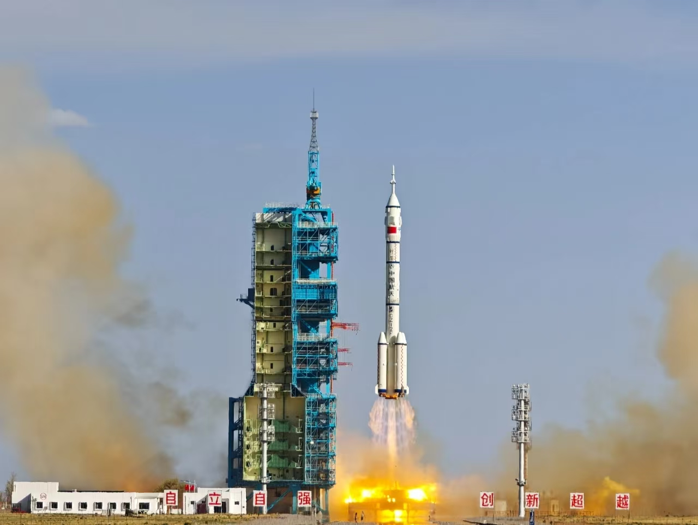
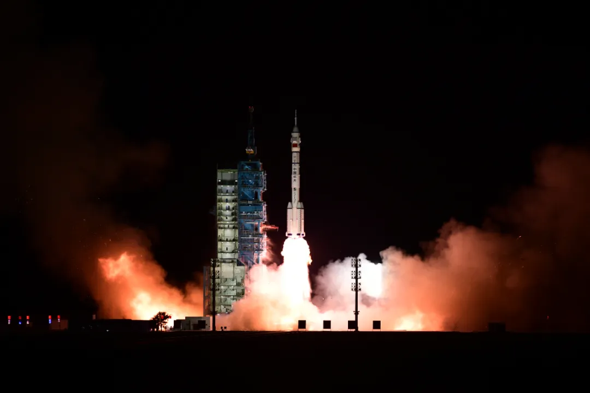
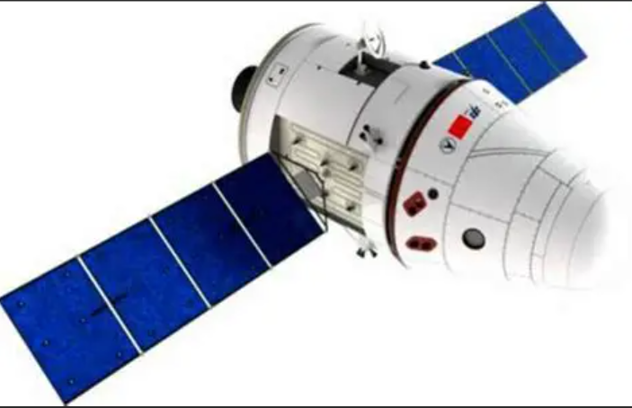

Portfolio
飞船 · 火箭 · 卫星 · 航天器
从神舟飞船到长征火箭，从高分卫星到嫦娥探测器，这里串联起我国航天“舰队”和星座的代表型号，展现中国航天装备的整体实力。
飞船矩阵
空间站阶段“神舟+天舟”双线运行，承担载人运输和物资补给任务。

神舟二十号
- 发射时间：2025年5月，酒泉卫星发射中心
- 乘组亮点：与神舟十九号完成首次“太空会师”，验证长期在轨交接流程
- 任务状态：已完成返回前检查，东风着陆场待命
更多信息

神舟二十一号
- 发射时间：2025年10月31日，酒泉卫星发射中心
- 运载火箭：长征二号F 遥十四
- 任务概况：将与神舟二十号短期同轨运行，继续推动空间站“乘组常驻+轮换”机制
官方预告

新一代载人飞船试验船
- 发射时间：2020 年首飞成功
- 亮点：返回舱可重复使用，具备登陆月球的扩展能力
- 任务定位：面向深空探索与大规模人员运输
研制进展

天舟八号
- 功能：货物补给、推进剂补加、垃圾再入销毁
- 新特征：增设智能储物与低温冷链，为太空厨房提供新鲜食材
了解天舟系列
运载火箭
传统长征家族与可重复使用新型号并进，满足载人、深空与商业发射需求。

长征二号F
神舟系列“御用”火箭，具备逃逸塔与高可靠冗余控制系统。
型号资料

长征三号丙
承担北斗、风云等高轨卫星发射，可实现“一箭多星”。
查看详情

长征十一号（海射）
固体运载器，支持海上移动发射，解决落区限制。
更多发射
卫星星座
通信、遥感、导航、科学探测多线演进，形成“天地一体化”数据网络。

通信广播卫星
东方红五号平台承载 100Gbps 级高速通信，覆盖亚太地区。
平台介绍

高分辨率对地观测
高分三号、四号实现亚米级成像，频繁重访灾害现场。
任务数据

北斗导航星座
由 30 余颗 MEO/GEO/IGSO 卫星组成，提供厘米级增强服务。
北斗官网
探测器与空间实验室
嫦娥探月与天宫实验室继续迭代，面向月球南极与深空探测。

嫦娥一期系列
从嫦娥一号到四号，完成“绕、落、巡”三步任务。嫦娥七号将进一步突破南极采样。
探月工程

天宫空间实验室
天宫一号、二号为中国空间站奠定基础，现已与“天和+问天+梦天”构成 T 形组合体。
空间站节点